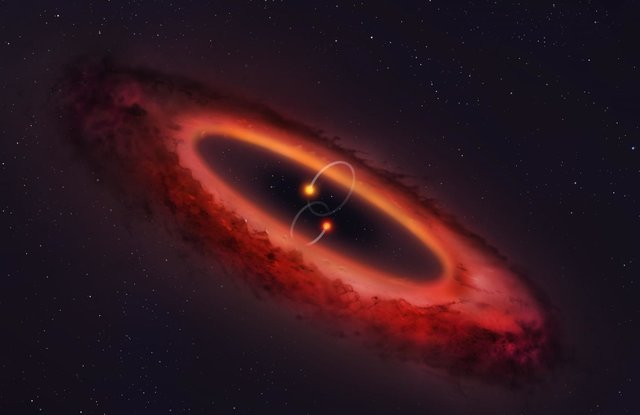
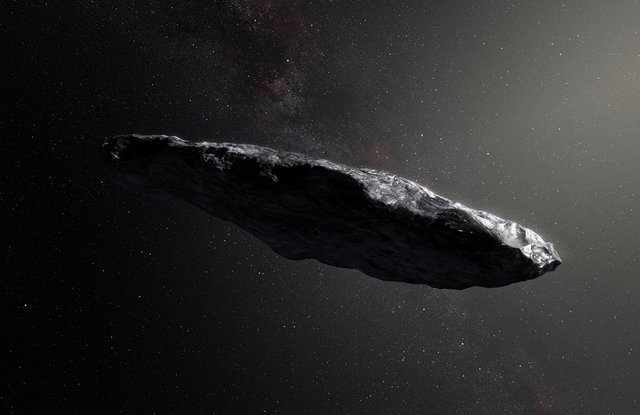

The Great Space Blog
We encourage our community to write blogs and share knowledge and anecdotes!
Black Holes
Black holes are big, scary, saucy beasts that will eat you. Do you think you could survive a black hole? Spaghetti!


The Space Race
The Earth was small, light blue, and so touchingly alone, our home that must be defended like a holy relic. The Earth was absolutely round.
Will Asteroids Impact Earth?
The Earth was small, light blue, and so touchingly alone, our home that must be defended like a holy relic. The Earth was absolutely round.
